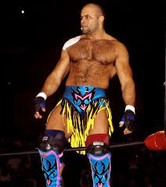

Nombre real: Charles Ashenoff
Fecha de nacimiento: 6 de enero de 1964
Lugar de nacimiento: Santiago de Cuba, Cuba
Alias: Konnan, El Rey del Callejón
Icono de la lucha libre en México y pionero del estilo callejero. Konnan fue pieza clave en la popularización de la lucha libre entre el público joven, mezclando cultura urbana y lucha.
Estrella en AAA, WCW, Impact Wrestling y otras empresas. Impulsor de talentos como Rey Mysterio, Psicosis y Juventud Guerrera. También trabajó como manager y productor creativo en AAA.
Nacido en Cuba y criado en Miami, es una figura influyente dentro y fuera del ring. Ha sido comentarista, manager, productor y mentor de una generación completa de luchadores latinos.